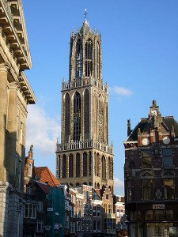
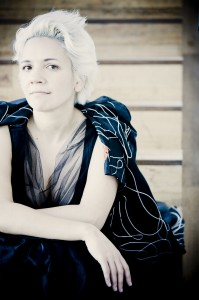

Sebastian Stober shot some beautiful photos of the Utrecht and all the ISMIR 2010 events. The photos can be found here.
social program
Tuesday, 10 August
There will be a reception in the garden of the Academie Gebouw of the Utrecht University. The reception will be accompanied by a carillon concert from the Dom tower performed by Arie Abbenes.

about Arie Abbenes
Arie Abbenes, born in Den Helder, studied carillon with Peter Bakker in Hilversum and with Piet van den Broek at the Carillon School in Mechelen. He received his final degree in 1968 with “Great Honours”
For 25 years he has performed on the carillon at the Dom tower in Utrecht at the Holland Festival of Early Music. Inspired by this, he developed new innovative ideas regarding carillon restoration. The recent restoration of the carillons in Nijkerk (1777), Turnhout (1779), Helmond (1723) and Kampen (1661) are among the carillons that show the results hereof.
During 1971/73 Abbenes was employed Associate Professor of Music in Carillon and Campanology at the renowned Indiana University School of Music in Bloomington, Indiana (USA). On the Dutch Carillon School (Faculty of Music of the Utrect School of Arts) he was affiliated as professor of carillon for 21 years.
Arie Abbenes was long city carillonneur of Asten, Eindhoven, Tilburg and Son. Currently, he is the carillonneur of Oirschot and Utrecht, where he plays the Hemony carillons in the Dom (1664) and Nicolaïkerk (1649) and the new Petit & Fritsen carillon in Vleuten. He made several Radio, television and CD recordings and he performed in the Netherlands, Belgium, France, Germany, Denmark, Spain, Portugal, United States, England, Ireland, Japan, Switzerland and Korea.
In 2004 he received the Knighthood in the Order of Oranje Nassau for his merits for the carillon in the Netherlands and abroad. On the occasion of his forty-year jubilee in 2007, Arie Abbenes was appointed honorary citizen of Asten.
Wednesday, 11 August
After Wednesday’s scientific program the Utrecht School of Music and Technology (USMuT) presents a concert.
The Utrecht School of Music and Technology is a professional Music Education focusing on composition, production and musictechnology. USMuT is one of the Schools of the Utrecht School of the Arts (HKU). USMuT was founded in 1985 and developed into a large and very successful School with well over 400 students. We offer a preparatory course, and grades as BA, MA as well as MPhil and PhD. 95% of our graduates work and earn a living within 2 years after graduation, USMuT educates for real existing jobs. Composition is taught in several contexts like Stage, Media (Film & TV), Modern Dance, Theatre, Games etc. Students usually specialize in two or three contexts. We have a faculty of 35 professionals, most of them in part-time jobs combined with their own professional practice.
program
Three compositions for prepared piano, Disklavier-grand piano and electronics performed by Sonsoles Alonso
- Niek Lucassen: “Short Piece for Prepared Piano”
- Ben Wallet: “Oh, Aarde bestel mij nu meteen, timmer zes planken om mij heen”
- Rogier van Straten: “Improvisation for piano, Disklavier en electronics”
Three compostitions for various electronics
- Konstantinos Vasilakos: “…” voor singing voice, Petzhold-blokfluit en electronics.
- Laurens van der Wee: “Cake” for analogue synthesizer and sonic improvisation system.
- Augusto Meijer: “Bioluminescence” for fixed media and 4 loudspeakers.
about the composers and their pieces
Niek Lucassen: “Short Piece for Prepared Piano”.
This piece was based on the idea of ‘order vs. chaos’ and ’sound vs. music’. The sound of the piano is altered by screws, haircomb and the by use of an E-bow.
Niek Lucassen (1986) studies Composition & Music Production and works on contemporary classical music and composition for media.
Ben Wallet: “Oh, Aarde bestel mij nu meteen, timmer zes planken om mij heen”.
This futile cry of despair takes only a little less than 10 minutes, but afterwards you will definitely feel 10 years older.
Ben Wallet studies Compositie voor de Media.
Laurens van der Wee: “The Cake”, performance Eliad Wagner on analog synthesizers.
The Cake is a sonic improvisation system, built to perform with a musician. An analysis algorithm will reduce two incoming sound streams to one single stream, cut this up and classify the segments. This library is then used to drive the synthesis. The Cake likes to be judged on its musical output.
Laurens van der Wee (1982) is a sonic designer currently enrolled in a Master of Music program at the Music Technology department of the Utrecht School of the Arts. Projects include Tilemaster (SMC & ICMC 2009), VOID (electronics for modern dance), No Sine Cure (oscilloscope performance, ICMC 2008) and Anthèmes 2 (software).
Augusto Meijer: “Bioluminescence” for fixed-media and 4 loudspeakers
“Bioluminescence” is a mystical journey of sound, which display’s the world of bioluminescent creatures that live in the great depths of our oceans. “Bioluminescence” is primarily made for an art installation project, in which both light-art and the “Bioluminescence” piece attempt to trigger our senses to experience this journey. There is a second version of the piece made for concert performances.
Augusto Meijer is an electro-acoustic music composer from the Netherlands. Augusto was born in Colombia, in 1988. At the moment he studies for a master in ?composition in context? at the Utrecht School of the Arts. In this study, he focuses strongly on electro-acoustic music, and composition techniques. He uses synthesizers and samplers to create his sound material. All following procedures are done within the computer. The first tape piece was completed in 2007. After that, he discovered he wanted to continue focusing on fixed media pieces. Multidisciplinair performances, doing research and practise on composing techniques & spatial composing are part of that development.
performer: Sonsoles Alonso

Spanish-born, Netherlands-based Sonsoles Alonso (photo by Marco Borggreve) is so very much more than just a versatile pianist.
Sonsoles is on the cutting edge of new music. The last decade saw her grow both as a musician and performer, continually redefining her self and emerging as a major voice in the growing contemporary piano and (live) electronics formats.
Influenced by her teachers Anthony de Mare and Morton Feldman’s disciple Nils Vigeland, Sonsoles moved to Amsterdam in 1996. During the past 10 years she has built an impressive career with concerts in Holland and abroad, multidisciplinary projects plus concerts with other musicians and different ensembles. Sonsoles also improvises and works with live electronics as well.
Currently Sonsoles lives in Utrecht.
She has been heard during: Gentse Vleugels (Belgium), Gaudeamus Week (Amsterdam), Festival Punto Aparte (Spain), Ton de Leeuw Festival (Tirana), Randspiele Festival (Berlin), Rumor Festival (Utrecht), Festival Spazio Musica (Cagliari), Festival November Music (Den Bosch), Deep Listening Space of Pauline Oliveros (New York). In 2009 she premiered Dromomania with German pianist Moritz Eggert and Dear Santa…with fluxus artist Willem de Ridder. Upcoming collaborations include: Electra + Sonsoles.
Sonsoles holds degrees in Classical Piano Performance from the Royal Conservatory of Madrid and the Manhattan School of Music (Master’s Degree) in New York. At the Conservatory of Amsterdam she followed the course ‘Contemporary Music through Non-Western Techniques’ focusing on rhythmic complexity.
She is often invited to give lectures and master classes on the subject of ‘Contemporary Music with and without (Live) Electronics’ and ‘Prepared Piano & Inside Piano’ both in The Netherlands and abroad.
Thursday, 12 August
The conference dinner will take place at the National Museum From Musical Clock to Street Organ. There will first be a guided tour and thereafter there will be a dinner in main hall of the museum.